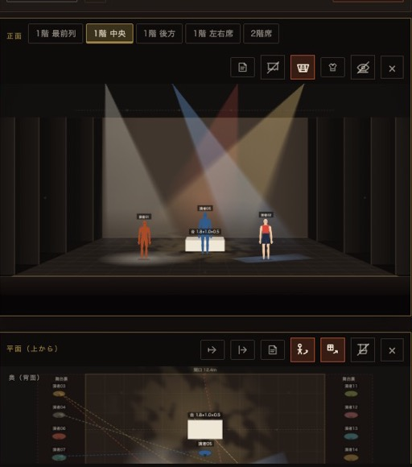
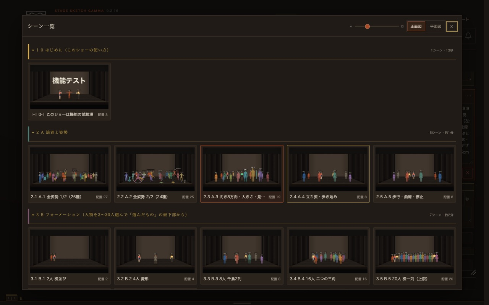
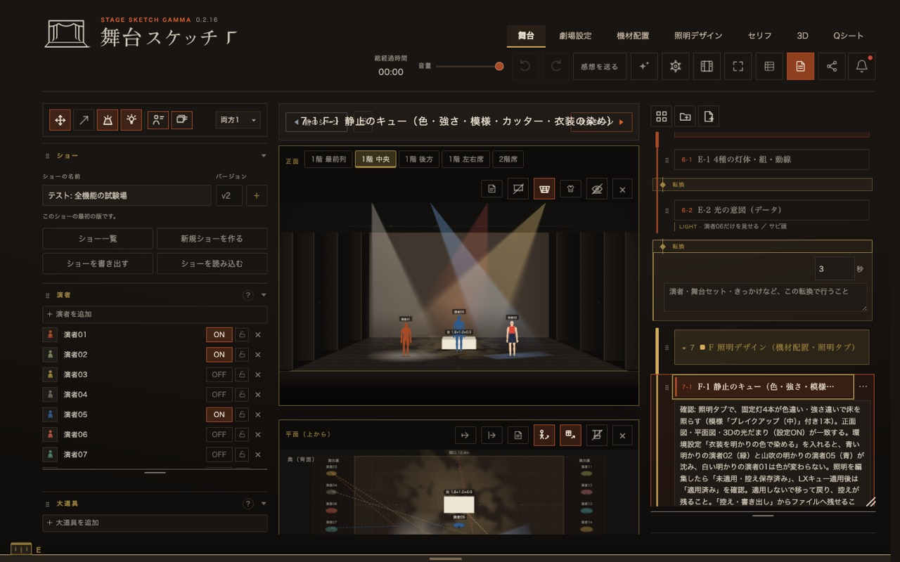
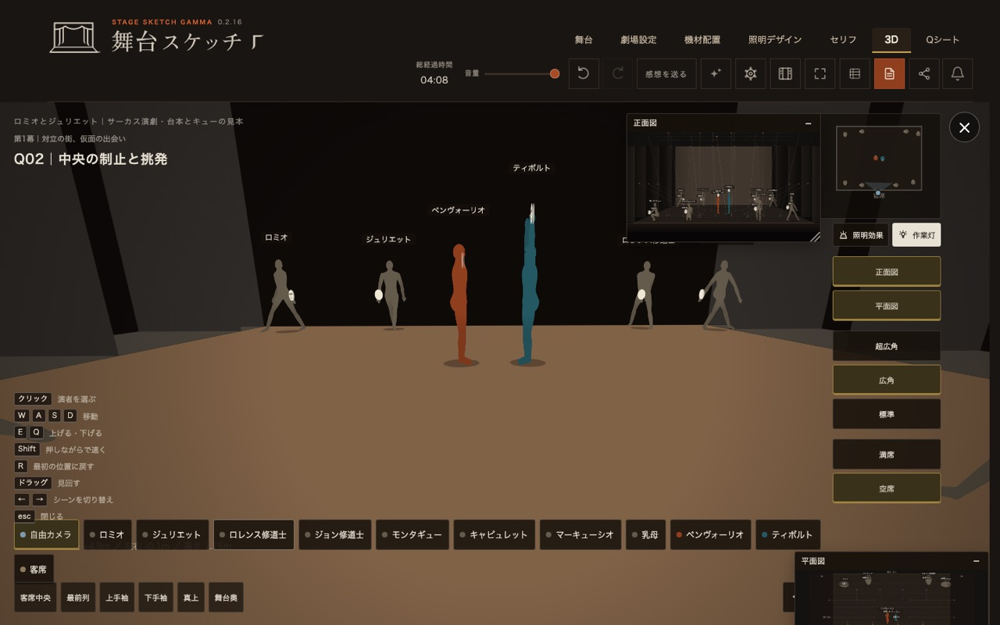
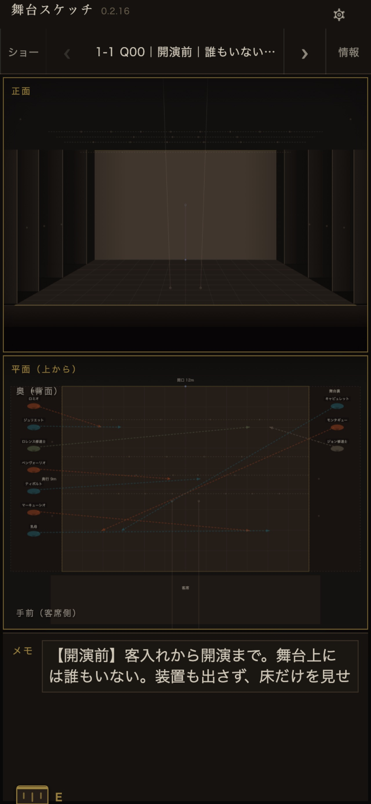
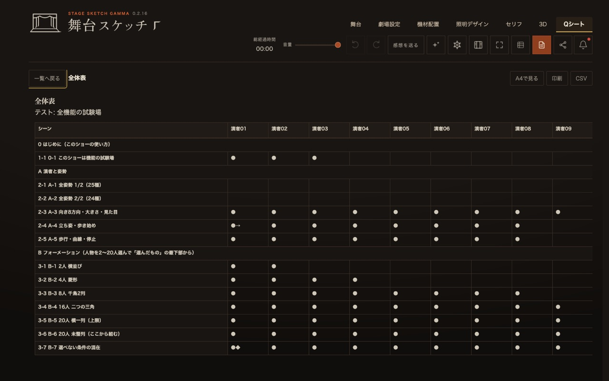
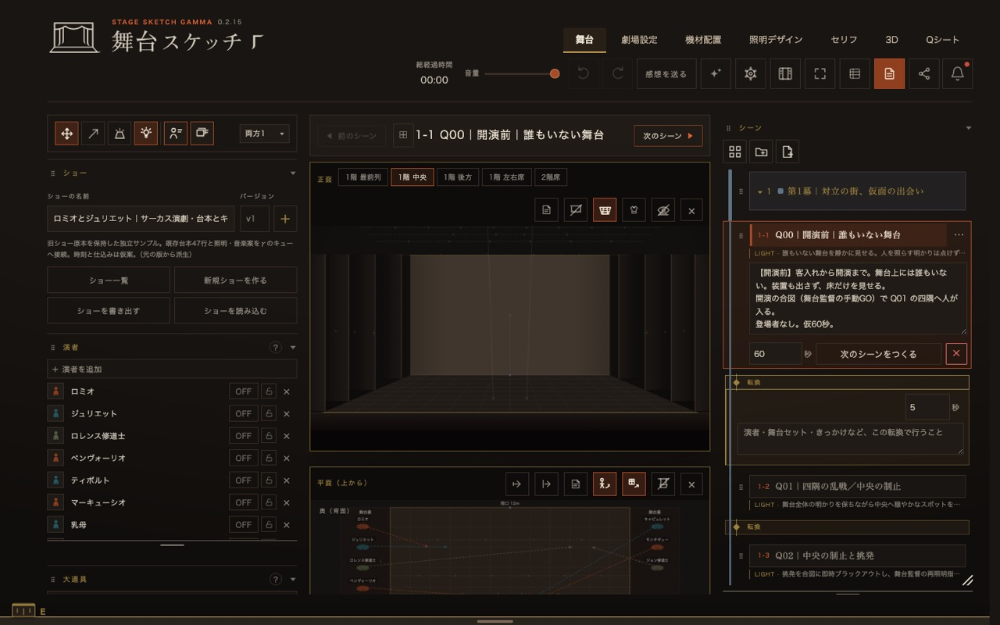
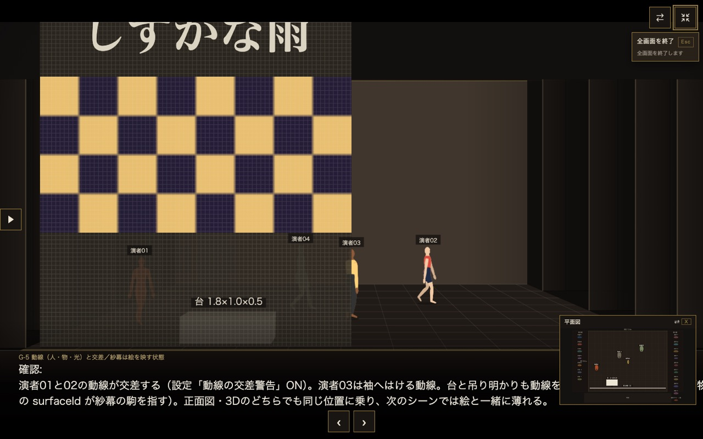
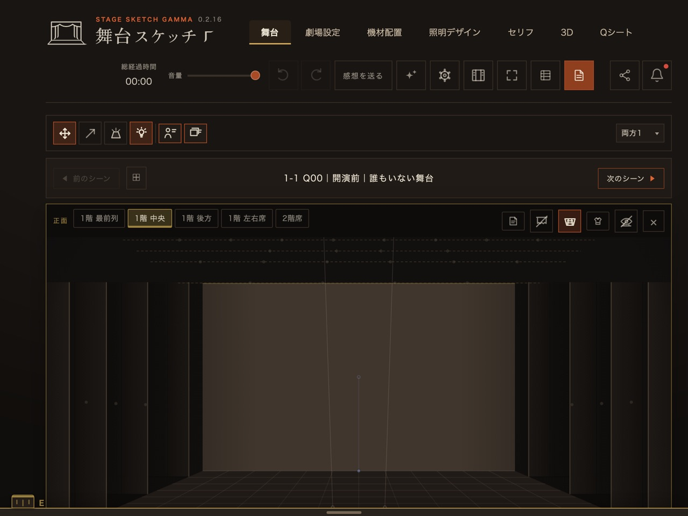

登録不要・保存されません・PC推奨。演者3人／セット2つまで。製品版の機能も錠つきで見えます。
STAGE SKETCH
舞台スケッチ
舞台の立ち位置と動線を、客席からの正面図と真上の平面図で同時に描くツールです。
体験版を使ってみる
製品版ベータを使ってみたい
ベータ期間中は無償。お問い合わせ制です。

仮スクショディレクターへ
伝えたいのは、立ち位置じゃない。
あなたの思いは、もっと伝わる。
アーティストへ
立ち位置は、稽古の前に。
あなたの稽古は、もっと質の高いものに。
できること
14の機能を、3つの仕事に分けて。
製品版（ベータ）でできることです。体験版で開けるのは、このうち一部（正面図と平面図、客席の位置、シーンの切替、姿勢）。番号は下の「制作の流れ」でも使います。
描く場面をつくる
- 連動する正面図と平面図演者や大道具を動かすと、客席から見た正面図と真上の平面図が同時に変わります。
- 客席のどこから見るか最前列・中央・後方・左右席・2階席。二席目を並べて、同じ場面を見比べることもできます。
- 演者の姿勢・向き・衣装立つ、座る、逆立ち、跳ぶから、楽器を弾く姿勢まで。向きと大きさ、衣装の色も決められます。
- 大道具・小道具・サーカス器具台・テーブル・椅子・壁から、トラピーズ、シルホイール、ティシュー、チャイニーズポールまで。箱や板を組んで、自分のセットを登録できます。
- 劇場を選ぶ・作るプロセニアム、スラスト、アリーナ、シャピトー。寸法を入れて自分の劇場も作れます。せり・盆・幕も置けます。
- 照明の見え方吊り・SS・前明かり・転がしの4種。光だまりと光の筋、作業灯を消したときの暗さ、衣装に当たる色まで確かめられます。
見る・共有する稽古の前と、稽古で
- シーン一覧と転換幕・章でまとめたシーンを順に送るだけ。転換の秒数と暗転を決めれば、演者が歩いて移る動きを再生します。
- 別案を見比べる同じ場面でA案・B案を切り替えて決めます。採用した案だけがショーに残ります。
- 3Dで舞台の中へ客席中央から、袖から、真上から。演者を選べば、その人の目で舞台を見られます。
- 演者のスマホで予習演者は自分のiPhoneで場面を順に送り、立ち位置とメモを確かめられます。
- 招待URLで同じ場面を見ながら会議製品版ベータホストは全機能。ゲストはレーザーポインタと矢印の描画だけです。
本番の資料を出す同じデータから
- 画像として書き出す正面・平面・両方を、いまの場面からショー全体まで一括で。ピッチ用には画風4種、最大3840×2160。
- Qシート・バミリ図・香盤表全体表、演者ごと、部署ごと。同じショーから印刷用ページとCSVが出ます。
- 日本語・英語・中国語画面の言葉を切り替えられます。海外のメンバーとも同じ画面で。
ほかにも: タイムラインと音源（時間式／カウント式）、台本とセリフキュー、付箋とペン、背景の写真、キーボードショートカット。
制作の流れのどこで使うか
構想から本番まで、同じショーのデータで。
順番どおりに使う必要はありません。構想からでも、稽古の途中からでも入れます。段の番号は、進行表の呼び方に合わせています。
-
Q1構想
場面を並べる
いままでノートの走り書きと、頭の中の絵。人に見せられる形になるのは、だいぶ後になりがちです。
劇場のプリセットを選び、演者を登録して、シーンを並べる。幕・章でまとめ、全シーンを小さな絵で見渡せます。説明と秒数は、あとから足せます。

仮スクショ全シーンを小さな絵で見渡す一覧。押して、その場面へ飛べます。撮影後: カット03（シーン一覧と転換）のループ動画。 -
Q2配置
立ち位置を、稽古の前に決める
いままで平面図だけでは、客席からの見え方が分からない。口で伝えると、人によって頭の中の絵が違ってしまいます。
平面図で動かすと、正面図も動く。席を替えて、どの客席からどう見えるかを確かめる。姿勢・器具・照明の見え方まで入れて、頭の中の絵を一枚にできます。

仮スクショ正面図に光の筋、平面図に光だまり。照明の「見え方」を同じ場面で確かめられます。撮影後: カット01（連動）とカット09（照明）のループ動画。 -
Q3確認
見え方を確かめ、案を決める
いままで劇場に入ってから「ここからだと隠れる」が分かる。直す時間は、もう残っていません。
3Dで客席の各所から、そして演者の目から見る。同じ場面の別案を切り替えて、決めてから稽古に入れます。

仮スクショ3Dで舞台の中へ。下の視点ボタンで、自由カメラ・各演者・客席を切り替えます。撮影後: カット10（3Dカメラ）のループ動画。 -
Q4稽古
演者が、先に知っている
いままで稽古の初日は、立ち位置の説明から始まりがちです。
演者は自分のスマホで場面を順に送り、立ち位置とメモを読んでから稽古場に来ます。稽古場では全画面にして場面を送り、転換を再生して見せられます。

仮スクショiPhoneで。正面図と平面図が縦に並び、下に場面のメモ。撮影後: カット13（スマホで予習）のループ動画。 -
Q5本番
資料を、同じデータから出す
いままで立ち位置図、香盤表、キューシートを別々に作る。直すたびに、どれかがずれていきます。
画像、バミリ図、小道具の香盤表、Qシートが、同じショーから出ます。場面を直せば、資料もそこから作り直せます。

仮スクショQシートの全体表。右上から A4で見る・印刷・CSV。撮影後: カット11（画像の書き出し）のループ動画。Qシートのカットは未発注。
はじめ方は、3つだけ
- ブラウザで開く登録はいりません。PCをおすすめします。
- 保存は、この端末にファイルに書き出して、控えと受け渡しができます。
- 共有は、招待URLで製品版ベータの機能です。ベータ期間中は無償。
わかりやすいUI
画面は3列。覚える場所は変わりません。
左に一覧、中央に図、右にシーン。選んで、動かして、送る。この3つで、ほとんどの作業が進みます。

仮スクショ- 1上の帯タブは7つ。ふだんは「舞台」だけで足ります。劇場設定・照明デザイン・3D・Qシートは、要るときに開きます。
- 2左の欄ショー、演者、大道具、小道具の一覧。「＋」で足して、図の上へ置きます。
- 3正面図客席から見た絵。上の席のボタンで、見る位置を替えます。
- 4平面図真上から。ここでドラッグすると、正面図も同時に動きます。
- 5右の欄シーンの一覧と転換。「次のシーンをつくる」は、いまの配置を引き継げます。
迷わないための3つ
- 最初の案内は、手を動かす順に初めて開くと、図に輪が付いて「やること」が順に出ます。人物を置く、次の場面を作る、見返す、まで。
- 使い方は、画面の中でさがす「使い方をさがす」に言葉を入れると、関係の深い節が並びます。冊子は日本語と英語。
- 錠つきの機能も、隠さない体験版でも製品版の欄はそのまま見えます。何ができるかを、先に確かめられます。
端末による違い

仮すべての機能。描く・決める・書き出すはここで。全画面にして見せるときも。

仮稽古場で。ホーム画面に追加して、場面を送り、見せる。
見る係。演者が場面を順に送り、立ち位置とメモを読む。
画面の言葉は、日本語・English・中文（簡体・繁体）。
注意点
舞台スケッチは技術図面ではなく、安全を検証したり保証したりするものでもありません。ディレクターとアーティストの意思疎通を円滑にし、良いショーを作る時間を増やすためのスケッチです。体験版で描いたものは保存されません。
体験版と製品版ベータ
まず触る。もっと使う。
体験版 — ブラウザで、いま
錠の掛かった欄も、そのまま見えます。
- 正面図と平面図が連動して動く
- 客席5か所から見る
- 場面の切替と転換の再生
- 演者3人・セット2つまで、姿勢いろいろ
体験版はスマホでも開けますが、操作が限られます。PCでのご利用をお勧めします。
製品版ベータ — 14の機能すべて
3Dカメラ、照明の見え方、オンライン会議、書き出し。
- 人数・セット数の上限なし
- 3Dカメラで演者の目線に入る
- 招待URLで同じ場面を見ながら会議
- 画像として書き出し、一部でも一括でも
ベータ期間中は無償です。ボタンの先で、お問い合わせの手順をご案内します。Macでは Safari の「ファイル」→「Dockに追加…」で、ブラウザ版を独立したウィンドウで使えます（macOS Sonoma以降）。ネイティブMac版はベータ版の対象外です。
私は10年以上、幸運にもいくつもの素晴らしいショーに沢山演者として関わることをさせていただきました。一人の演者として、素晴らしいディレクターの意図をどれだけ把握して観客に届けることができるのかが常に私の戦いでした。このアプリは、そんな私がこれがあったらよかったのに、を盛り込んだアプリです。
芸術という抽象的なものにおいて、意思疎通を言葉だけで行うことは非常に難しいものです。ディレクターが見せたいものをアーティストが表現しようとするとき、その意図を理解することに時間を取られすぎることもありました。
私は新しい劇場に入るたびに客席を歩き回り、それぞれの場所から自分がどのように見えるかをイメージします。俯瞰図では、人や物の位置と全体のバランスを第三者の目で捉えられます。正面図では、お客さんやディレクターから舞台がどう見えるかを考えられます。演者はこれらを常に頭の何処かで考え続けます。
私はショーの世界が大好きです。だからこそ、準備不足のショーを見ると少しがっかりします。演者たちと事前に意図や配置を共有できればリハーサルの初期段階をより早く終え、その先の通し練習へ時間を使えます。そうしてショーを素晴らしいものとし、世界を少しだけ素晴らしいものにしてくれたら嬉しいです。